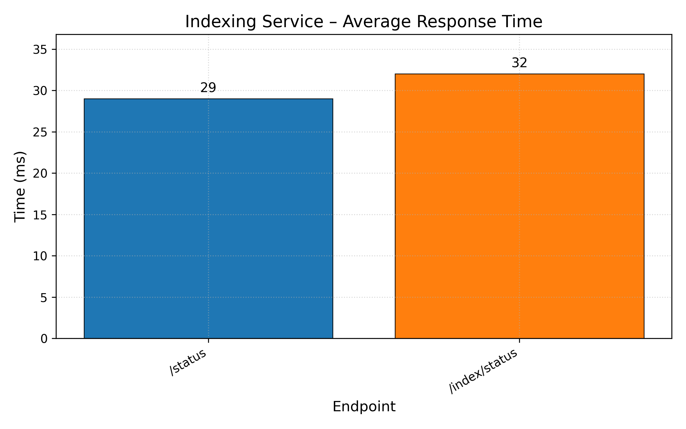

<h2>indexing-service Container Performance Results</h2>
<table border='1'><tr><th>Endpoint</th><th>Avg Response Time (ms)</th><th>Success Rate</th></tr>
<tr><td>/status</td><td>29</td><td>100%</td></tr>
<tr><td>/index/status</td><td>32</td><td>100%</td></tr>
</table>
<!-- PLOT_BLOCK_START:INDEXING_LATENCY -->
<div><h3>Latency Plot</h3></div>
<!-- PLOT_BLOCK_END:INDEXING_LATENCY -->


